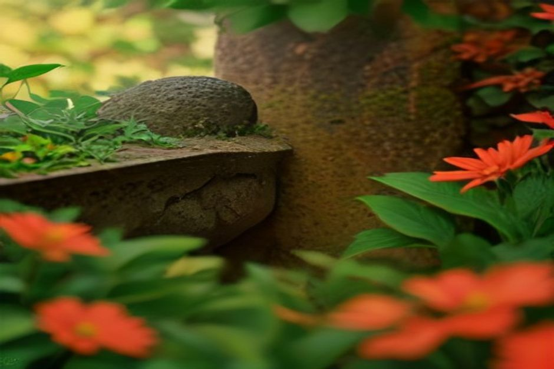

Quem procura um jardim na Madeira raramente tem falta de opções: tem falta de tempo. Há jardins botânicos, quintas inglesas, parques gratuitos no centro do Funchal e até um "jardim do mar" que só se visita bem a partir da água. Aqui fica o que cada um tem de diferente, o que se combina com quê e por onde começar.
Por onde começar: três jardins a poucos minutos uns dos outros
Se só tem uma manhã, concentre-se na encosta sobre o Funchal. O Jardim Botânico, o Jardim Orquídea e o Monte Palace ficam perto uns dos outros e juntam-se facilmente ao teleférico do Monte. Não precisa de os ver todos com a mesma calma: escolha um para ficar mais tempo e use os outros como complemento.
Jardim Tropical Monte Palace
É o jardim mais completo da ilha. São 70 000 metros quadrados de encosta com um jardim oriental, um lago de carpas, painéis de azulejo português, um percurso pela laurissilva e um museu com mais de 700 minerais e pedras semipreciosas.
Chega-se bem pelo teleférico do Monte, a partir da zona velha. Ao meio-dia há a atuação "Música no Monte", junto ao lago central, e pode ser uma boa razão para acertar a visita a essa hora.

Jardim Botânico da Madeira
Está construído em terraços sobre a cidade e reúne mais de 2500 espécies, exóticas e nativas, em canteiros densos e coloridos. A secção geométrica de cactos e suculentas é o ponto alto.
A vista sobre o Funchal e a baía é um dos melhores miradouros gratuitos da ilha, embora a entrada no jardim seja paga. Fica a poucos minutos a pé do Jardim Orquídea e da estação do teleférico.
Jardim Orquídea
É pequeno, de estufa, com várias centenas de espécies e híbridos de orquídeas, mais antúrios, bromélias e plantas carnívoras. Vê-se bem em meia hora, por isso funciona como complemento e não como destino por si só.
Para quem prefere sossego: Palheiro, Quinta das Cruzes e Jardins do Lago
Nem todos querem os jardins mais visitados. Estes três são mais calmos e dão uma ideia diferente da ilha.
Jardins do Palheiro (Quinta do Palheiro)
É o oposto do Monte Palace: um jardim de quinta ao estilo inglês, 500 metros acima do Funchal, com canteiros formais, relvados amplos, caminhos por entre árvores e uma das melhores coleções de camélias da Europa. Foi crescendo ao longo de dois séculos com a família Blandy, conhecida pelo vinho da Madeira.
Continua a parecer uma propriedade privada e não uma paragem turística. Vai-se tanto pelo sossego como pelas plantas.
Jardim da Quinta das Cruzes
Fica atrás da zona velha do Funchal, no museu com o mesmo nome. É um jardim mais selvagem, com peças de cantaria antiga espalhadas pelo chão, como molduras de janelas e portais recuperados de edifícios históricos demolidos na cidade, sob dragoeiros e orquídeas. É a escolha para quem quer jardins sem multidões.
Quinta Jardins do Lago
É um jardim de hotel aberto a visitantes de fora, organizado em volta de um canhão do século XVIII e de vários lagos. A plantação tropical rivaliza com a de jardins pagos ali perto. É menos conhecido do que o Palheiro, que fica próximo, e vale a pena juntar os dois se já estiver por essa zona das colinas.
Jardins gratuitos no centro do Funchal
Nem tudo exige bilhete nem subir a encosta. Dois jardins do centro são gratuitos e cabem num passeio a pé.
Jardim Municipal do Funchal
Junto à Avenida Arriaga, é pequeno e é onde os funchalenses realmente se sentam: caminhos com palmeiras, um coreto e sombra a cinco minutos da sé. Não ocupa uma tarde, mas é o mais fácil de encaixar numa volta pela zona velha.
Jardim de Santa Catarina
Maior, também gratuito, sobre a falésia entre a zona velha e a marina. Tem vista de mar sobre a baía do Funchal, um pequeno lago, uma capela e canteiros que mudam ao longo do ano. Está menos tratado do que os jardins botânicos lá em cima, mas a localização compensa: fica a poucos passos do porto, e é a paragem natural antes ou depois de um passeio de barco.
Jardins da Madeira que não parecem jardins
Os dois últimos desta lista saem do guião habitual e mostram como o clima muda de um lado para o outro da ilha.
Fajã dos Padres, o jardim do mar
Se procurava os "jardins do mar" da Madeira, é este. Não é um jardim formal, é um jardim de trabalho: uma faixa estreita de bananeiras, mangueiras e socalcos de vinha ao nível do mar, debaixo de falésias de 300 metros. Foi plantada por padres jesuítas há séculos e ainda hoje é cultivada.
A maioria das pessoas chega de teleférico, a partir do topo da falésia. Nós achamos que o melhor caminho é a água. É a paragem que incluímos no passeio de dia da Chifbay, com saída da Marina do Funchal, passagem por Câmara de Lobos e Cabo Girão, banho e pranchas de paddle na Fajã dos Padres.
Os jardins da floresta do Ribeiro Frio
A 900 metros de altitude, junto à piscicultura de trutas, os pequenos jardins ornamentais do Ribeiro Frio têm fetos, hortênsias e camélias, num clima completamente diferente do da costa: fresco, húmido e à sombra da laurissilva. Mais do que um destino, é uma pausa verde no caminho para o miradouro dos Balcões. Mas o contraste com os jardins da costa vale a pena na mesma viagem.

Quando ir e quanto custa
O clima subtropical mantém sempre alguma coisa em flor. Ainda assim, do fim do inverno à primavera, de fevereiro a maio, é a altura mais forte para camélias, agapantos, estrelícias e jacarandás.
Os dois jardins do centro, o Municipal e o de Santa Catarina, são gratuitos e abrem todo o ano. O Monte Palace, o Jardim Botânico, o Palheiro, o Jardim Orquídea e a Quinta das Cruzes cobram uma entrada modesta. Confirme horários e preços no site de cada um antes de ir.
A Madeira não tem um grande jardim: tem uma dúzia, cada um moldado por um microclima diferente a poucas centenas de metros de distância.
Como organizar a visita
- Uma manhã: Monte Palace, Jardim Botânico e Jardim Orquídea, com o teleférico do Monte.
- Uma tarde mais calma: Palheiro, com os Jardins do Lago por perto.
- Sem carro e sem pressa: Jardim Municipal e Santa Catarina, a pé, a partir da zona velha.
- Um dia à parte: a Fajã dos Padres, que se vê melhor do mar.
Para esse dia, o passeio de dia sai às 10:00 ou às 14:00 da Marina do Funchal, cais C. São 2 h 30 até à Ribeira Brava por 500 EUR, ou 3 h até à Ponta do Sol por 600 EUR, para o barco inteiro e até 5 pessoas. Se preferir uma saída mais curta, o pôr do sol parte 1 h 15 antes do ocaso, todo o ano, e chega ao Cabo Girão em 2 h por 400 EUR, sem paragem para banho. Comida e bebidas a bordo, vídeo 360° e fotografias estão incluídos, e pode cancelar sem custos até 24 horas antes. Mais pormenores em informações práticas.
Os jardins são a Madeira vista de dentro. A Fajã dos Padres e a costa sul mostram o outro lado, o de quem chega pelo mar.